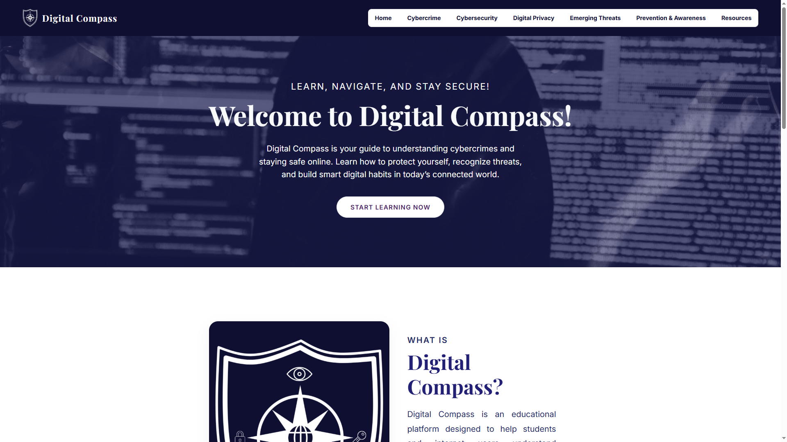
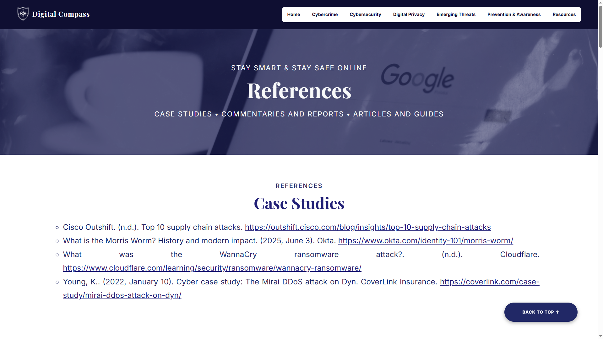
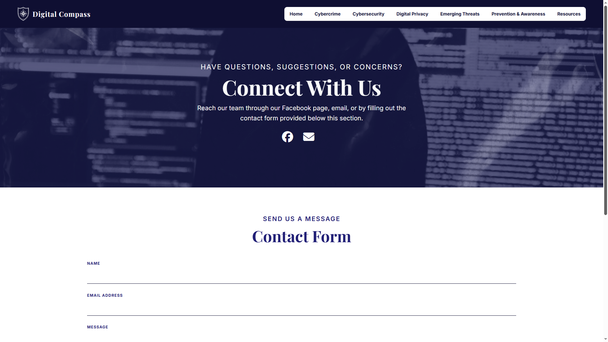

Questions About
Digital Compass
- What is Digital Compass?
- Is the content on Digital Compass reliable?
- How can I contact Digital Compass?
Digital Compass is an educational platform designed to help students and internet users understand cybercrimes and online risks. Through simple explanations, guides, and practical tips, it promotes awareness and responsible internet use. Its goal is to help users become safer and smarter online.

Yes, the content is carefully researched using trusted references and educational materials. Users can visit the References page to check the sources used in the articles and guides. This helps ensure that the information is accurate, updated, and useful for learning.

You can contact the team through the Contacts Page by filling out the form provided below the page. You may also reach out through their Facebook page or email for questions, suggestions, or feedback. Digital Compass welcomes messages from users who want help or want to learn more.

Questions About
Cybercrime Basics
- What is cybercrime?
- Why does cybercrime happen?
- Why cybercrime cases are still increasing today?
Cybercrime refers to crimes committed using computers, devices, or the internet. This includes phishing, hacking, identity theft, scams, malware, and cyberbullying. These attacks can harm both individuals and organizations.
Related Articles

Concepts of Cybercrime
What Is Cybercrime? Understanding the Digital Threat
Today, almost everything we do involves the internet. We use it to talk to friends, do schoolwork, and buy things online. But as...
Read Full Article →

Concepts of Cybercrime
From Phone Tricks to Ransomware: A History of Cybercrime
Cyber crime did not suddenly appear with the invention of smartphones or social media. It has a long history that goes all...
Read Full Article →
Cybercrime happens because of money, anonymity, weak security, personal motives, and social factors. Many criminals are attracted by easy financial gain, while others act out of revenge, curiosity, or the desire for power. Weak passwords, outdated systems, and poor awareness also make attacks easier.
Related Articles

Concepts of Cybercrime
Why Does Cybercrime Happen? The Causes Behind Digital Crime
Cyber crime does not happen by accident. There are real reasons why people choose to commit crimes online. Just like regular...
Read Full Article →

Concepts of Cybercrime
Busting the Myths: Common Misconceptions About Cybercrime
Despite how common cyber crime has become, many people still hold on to false beliefs about it. These beliefs can give p...
Read Full Article →
Cybercrime continues to grow because more people and businesses now depend on the internet. Attackers keep finding new ways to exploit weak systems and uninformed users. The ability to hide identity online also makes digital crime more attractive.
Related Articles

Concepts of Cybercrime
How Cybercrime Hurts Real People: Effects on Individuals
When we talk about cyber crime, it is easy to focus on the technical side, such as hacking tools, stolen data, or harmful soft...
Read Full Article →

Concepts of Cybercrime
When Organizations Are Targeted: The Impact of Cybercrime on Businesses
While cyber crime affects individuals deeply, its impact on organizations such as businesses, schools, hospitals, and gover...
Read Full Article →
Questions About
Cybersecurity and Internet Safety
- Why is cybersecurity important?
- How can I keep my accounts safe?
- Is public Wi-Fi safe to use?
Cybersecurity protects your accounts, devices, and personal data from hackers and online threats. It helps prevent identity theft, financial loss, malware infections, and privacy breaches. Strong cybersecurity habits create a safer and more responsible digital environment.
Related Articles

Concepts of Cybersecurity
Cybersecurity: Your Shield Against Digital Danger
Cybersecurity refers to the protection of your electronic gadgets, information, and online activities from cyber hackers and v...
Read Full Article →

Concepts of Cybersecurity
Cybersecurity Matters: Guard Your Digital World
Cybersecurity helps you protect from hackers online. Tools and prevention habits protect your phones, accounts, and perso...
Read Full Article →
Use strong and unique passwords for every account and enable two-factor authentication whenever possible. Avoid sharing login details, and always log out from shared or public devices. Regularly checking account activity also helps detect suspicious logins early.
Related Articles

Account Security
Using 2 Factor Authentication
For decades, the standard method for protecting online accounts has been a username and a password. Unfortunately...
Read Full Article →

Data Protection
Strong Password Creation
A strong password helps keep your online accounts safe. It protects your personal and work information from hackers. Using...
Read Full Article →
Public Wi-Fi can be risky because hackers may monitor traffic on unsecured networks. Avoid logging into banking apps, school portals, or sensitive accounts while using free public internet. It’s safest to use your own mobile data or a trusted network instead of relying on public Wi-Fi.
Related Articles

Account Security
Public Wi-Fi Risks
Free public Wi-Fi in coffee shops, airports, and hotels is incredibly convenient, but this convenience often comes at a steep price...
Read Full Article →

Account Security
Browser Security
Your web browser—whether it is Chrome, Edge, Safari, or Firefox—is your primary vehicle for navigating the modern internet...
Read Full Article →
Questions About
Digital Privacy & Emerging Threats
- What is digital privacy?
- What is a digital footprint?
- What are the current cyber threats?
Digital privacy means protecting your personal data, online identity, and activities from unauthorized access. This includes your passwords, social media posts, photos, location, and browsing history. Good privacy habits help reduce risks like identity theft and misuse of personal information.
Related Articles

Concepts
What is Digital
Privacy
Digital privacy is the fundamental right to control how your personal information is collected, used, and shared online. In an...
Read Full Article →

Concepts
Checking Your Privacy Settings
Reviewing and adjusting your privacy settings regularly ensures that your personalize experiences, and provide rec...
Read Full Article →
A digital footprint is the record of everything you do online, such as posts, comments, likes, searches, and uploads. Even deleted content may still remain saved or shared by others. Managing your digital footprint helps protect your reputation and privacy.
Related Articles

Concepts
Understanding Digital Footprint
A digital footprint typically refers to the data that you leave inside the internet. Every activity that you post on the intern...
Read Full Article →

Online Safety Tips
Protecting Digital
Footprint
Every time you go online — whether browsing a website, posting on social media, sending an email, or making an on...
Read Full Article →
The current cyber threats include AI-generated scams, deepfakes, ransomware, IoT attacks, and cloud vulnerabilities. These threats are becoming more advanced and harder to detect. Staying updated and learning safe online practices are the best ways to reduce risks.
Related Articles

Threats From New Technology
The Double-Edged Sword: AI-Powered Cyber Threats
Artificial Intelligence is changing the world, but it is also giving cybercriminals new ways to attack. AI Cyber Threats refer to...
Read Full Article →

Threats From New Technology
IoT Security Risks in Smart Devices
The Internet of Things (IoT) has completely changed how we interact with technology in our homes. Smart devices, light bulbs...
Read Full Article →
Questions About
Prevention & Awareness
- How can I prevent cybercrime?
- Where can I report cybercrime in the Philippines?
- Why is awareness important in digital safety?
You can prevent cybercrime by using strong passwords, updating devices, and avoiding suspicious downloads or links. Always be careful when sharing personal information on social media, emails, and chat apps. Awareness and smart online habits are the first step of digital protection.
Related Articles

Cybercrime Prevention
Protecting Devices
Our devices are among our most valuable possessions in the digital age. Smartphones, laptops, tablets, and compu...
Read Full Article →

Digital Wellness
Responsible Sharing
Every post, comment, photo, and link we share online contributes to the digital environment that millions of people inhabi...
Read Full Article →
Cybercrime incidents in the Philippines can be reported to the PNP Anti-Cybercrime Group (PNP-ACG) or the Cybercrime Investigation and Coordinating Center (CICC). Reports can be filed online through their official portals or in person at their offices. It's important to have screenshots, chat logs, transaction receipts, and account details ready as evidence.
Related Articles

Concepts of Cybercrime
Cybercrime Laws in the Philippines
The internet has changed how Filipinos communicate, work, and do business. But along with these benefits come serious th...
Read Full Article →

Cybercrime Prevention
Reporting
Cybercrime
Many victims of cybercrime choose not to report what happened to them — out of embarrassment, fear, or the mistaken beli...
Read Full Article →
Awareness helps users recognize scams, fake accounts, suspicious links, and unsafe online behavior before damage happens. It reduces the chances of becoming a victim of cybercrimes. Learning about cybercrimes empowers users to stay safe and protect others as well.
Related Articles

Cybercrime Prevention
Recognizing Scams
In a world where almost everything is done online, scams have become more sophisticated and harder to detect. Cyber...
Read Full Article →

Online Safety Tips
Spotting Suspicious Links
One of the most common ways cybercriminals gain access to personal information, install malware, or hijack acc...
Read Full Article →